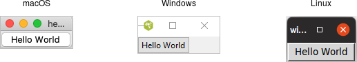

To make sure that everything actually did work, let's try to run a "Hello World" program in Tk. While for something this short, you could just type it in directly to the interpreter, instead use your favorite text editor to put it in a file.
from tkinter import * from tkinter import ttk root = Tk() ttk.Button(root, text="Hello World").grid() root.mainloop()
Save this to a file named "hello.py". From a command prompt, type:
% python hello.py
Couldn't find hello.py? You might be looking in the wrong directory. Try providing the full path to hello.py.

Our first program. Some work left to do before the IPO.